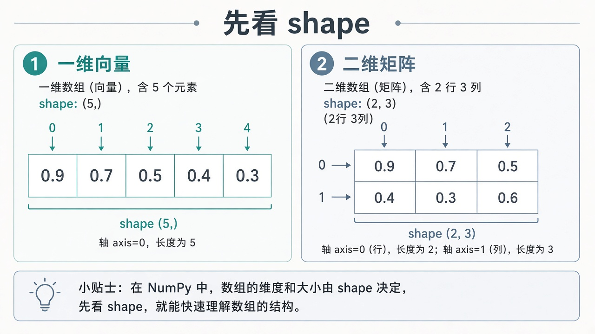
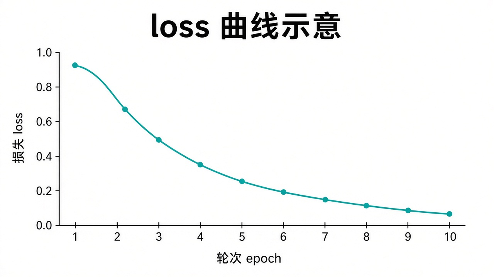

0. 怎么学 · 前置
请确认第一章已过关：能 python 某文件.py、会激活 venv、会 pip install。若还不会，先回 Python 底子。
- 仍然用练习文件夹（如
D:\shenji-python），建议新建子文件夹ch02专门放本章代码。 - 每节：看 → 敲 → 运行。画图时窗口弹出属正常，关掉窗口再继续。
- 数学只保留「形状对不对、能不能乘」的直觉，不证明公式。
建议时间：约 6–10 小时。安装通了再往下；shape 搞不清时不要急着学矩阵乘。
1. 为什么要 NumPy
Python 列表能装数字，但做大批计算又慢又麻烦。NumPy 的 ndarray（数组） 专为数值计算设计：一次对整表做加减乘，后面 PyTorch 张量的感觉也和它很像。
# 列表：要自己循环
xs = [1, 2, 3]
ys = [x * 2 for x in xs]
# NumPy：整表一次算完
import numpy as np
a = np.array([1, 2, 3])
b = a * 2
print(b) # [2 4 6]和深度学习的关系：图像、文本向量、权重矩阵，底层都是多维数字表。先在 NumPy 里看懂 shape，到 PyTorch 会轻松很多。
2. 安装 NumPy 与 Matplotlib
在已激活的虚拟环境里安装（终端前应有 (.venv)）：
cd D:\shenji-python
.\.venv\Scripts\Activate.ps1
python -m pip install -U pip
python -m pip install numpy matplotlib验证：
python -c "import numpy as np; import matplotlib; print(np.__version__, matplotlib.__version__)"能打印两个版本号即成功。
翻车：没激活 venv 就 pip → 包装错位置，脚本里 import numpy 失败。先看有没有 (.venv)。
完成 0 / 2 步
3. 创建数组
约定：几乎所有教程都写 import numpy as np，后面用 np. 调用。
import numpy as np
a = np.array([0.9, 0.7, 0.5]) # 从列表创建
z = np.zeros(5) # 5 个 0
o = np.ones((2, 3)) # 2 行 3 列全 1
r = np.arange(0, 1.0, 0.2) # 0, 0.2, ..., 0.8
print(a)
print(z)
print(o)
print(r)np.array([...])：最常用，把列表变成数组zeros/ones：造占位数据、造假样本时常用arange：均匀间距的一串数（注意终点通常取不到）
动手：新建 ch02/make_array.py，创建长度为 10 的全 0 数组，再创建一个 [1,3,5,7] 的数组并打印。
4. shape 与索引（本章核心）
shape 描述数组长什么样：有几维、每一维多长。深度学习里报错一大半是 shape 对不上。
import numpy as np
v = np.array([0.9, 0.7, 0.5, 0.4, 0.3])
print(v.shape) # (5,) → 一维，长度 5
m = np.array([
[1, 2, 3],
[4, 5, 6],
])
print(m.shape) # (2, 3) → 2 行 3 列
print(m[0, 1]) # 第 0 行第 1 列 → 2
print(m[:, 0]) # 第 0 列所有行 → [1 4]
print(m[1, :]) # 第 1 行 → [4 5 6]
.shape。行在前、列在后：(2, 3) = 2 行 3 列。坑：下标从 0 开始；m[2, 0] 在只有 2 行时会越界。拿不准就先 print(arr.shape)。
动手：造一个 shape 为 (3, 4) 的全 1 矩阵，打印第 2 行（下标 1）和第 0 列。
5. 数组运算
import numpy as np
a = np.array([1.0, 2.0, 3.0])
b = np.array([10.0, 20.0, 30.0])
print(a + b) # 对应位置相加
print(a * 2) # 每个元素乘 2
print(a ** 2) # 每个元素平方
print(a + 1) # 每个元素加 1（简单广播）对应位置运算要求 shape 兼容。初学先保证「两个一维一样长」或「数组和单个数」。
x = np.array([1, 2, 3])
y = np.array([1, 2])
# print(x + y) # 会报错：shape 对不上动手：有一组假 loss [0.9, 0.7, 0.5]，用数组算出「每个 loss 减 0.1」并打印。
6. 统计：mean / sum
import numpy as np
losses = np.array([0.9, 0.7, 0.55, 0.48])
print(losses.mean()) # 平均
print(losses.sum()) # 求和
print(losses.max(), losses.min())
m = np.array([[1, 2, 3],
[4, 5, 6]], dtype=float)
print(m.mean()) # 全体平均
print(m.mean(axis=0)) # 按列平均 → 长度 3
print(m.mean(axis=1)) # 按行平均 → 长度 2axis 直觉：axis=0 常理解为「沿着行的方向压缩」（跨行），得到每列的统计；axis=1 跨列，得到每行的统计。记不住就打印 shape 对比。
动手：用 2×3 的分数矩阵，分别算全体平均、每行平均。
7. 矩阵乘法（为神经网络铺路）
神经网络里一层的核心操作，常可以想成：输入向量 × 权重矩阵。NumPy 用 @ 或 np.dot。
import numpy as np
# 规则：左边列数 == 右边行数
# (2, 3) @ (3, 4) → (2, 4)
A = np.array([[1, 2, 3],
[4, 5, 6]], dtype=float) # (2, 3)
B = np.array([[1, 0],
[0, 1],
[1, 1]], dtype=float) # (3, 2)
C = A @ B
print(A.shape, B.shape, C.shape)
print(C)- 先看两边 shape，再相乘
*是对应元素相乘；@才是矩阵乘。别混。
报错 ValueError: matmul → shape 对不上。打印两边 .shape，检查「前一个的最后一维」是否等于「后一个的倒数第二维」。
动手：造 x shape (1, 4)，W shape (4, 2)，算 x @ W，确认结果 shape 是 (1, 2)。
8. Matplotlib 画 loss 曲线
训练时最常看的图：横轴是 epoch（轮次），纵轴是 loss（损失）。下降通常表示模型在拟合训练数据（下一章再讲含义）。

import matplotlib.pyplot as plt
epochs = [1, 2, 3, 4, 5, 6, 7, 8]
losses = [0.95, 0.80, 0.68, 0.60, 0.54, 0.50, 0.47, 0.45]
plt.figure()
plt.plot(epochs, losses, marker="o")
plt.xlabel("epoch")
plt.ylabel("loss")
plt.title("training loss")
plt.grid(True)
plt.tight_layout()
plt.savefig("loss_curve.png", dpi=150) # 保存到当前文件夹
plt.show() # 弹窗显示；保存后也可先注释掉plot：折线；xlabel/ylabel：轴名称savefig：存成图片，交作业或写报告方便- 若弹窗卡住，可只
savefig、暂时不用show
中文乱码：标题若写中文可能方块字。入门阶段轴标签先用英文 epoch / loss 最省事。
动手：改一组自己的假 loss（总体呈下降），保存为 my_loss.png。
9. 综合练习（分步勾选）
在 ch02/mini_lab.py 中完成。每步跑通再勾选。
完成 0 / 4 步
参考骨架（先自己写，卡住再对照）：
import numpy as np
import matplotlib.pyplot as plt
np.random.seed(0)
X = np.random.rand(5, 3)
print("X", X.shape)
print("mean axis0", X.mean(axis=0), X.mean(axis=0).shape)
W = np.random.randn(3, 2)
Y = X @ W
print("Y", Y.shape)
epochs = np.arange(1, 9)
losses = np.array([0.9, 0.75, 0.62, 0.55, 0.5, 0.46, 0.43, 0.41])
plt.figure()
plt.plot(epochs, losses, marker="o")
plt.xlabel("epoch")
plt.ylabel("loss")
plt.title("fake training loss")
plt.grid(True)
plt.tight_layout()
plt.savefig("ch02_loss.png", dpi=150)
print("saved ch02_loss.png")过关自检
勾选保存在本机浏览器。全部勾完再进下一章「机器学习直觉」。
完成 0 / 8 项
用 AI 学这一章
Cursor / Codex / ChatGPT 都可以。shape 类问题把完整报错 + 两边数组的 shape 打印结果一起贴出。
我在学 NumPy / Matplotlib（深基课第二章）。
环境：Windows，已激活 venv，numpy 版本 ____。
请不要直接给完整作业。
代码：
（粘贴）
我打印的 shape：
（粘贴）
完整报错：
（粘贴）
请：1）判断是 shape 问题还是别的；2）只改必要的几行；3）用一句话解释为什么这样 shape 才合法。